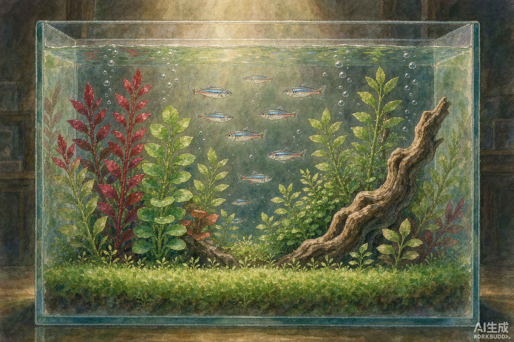
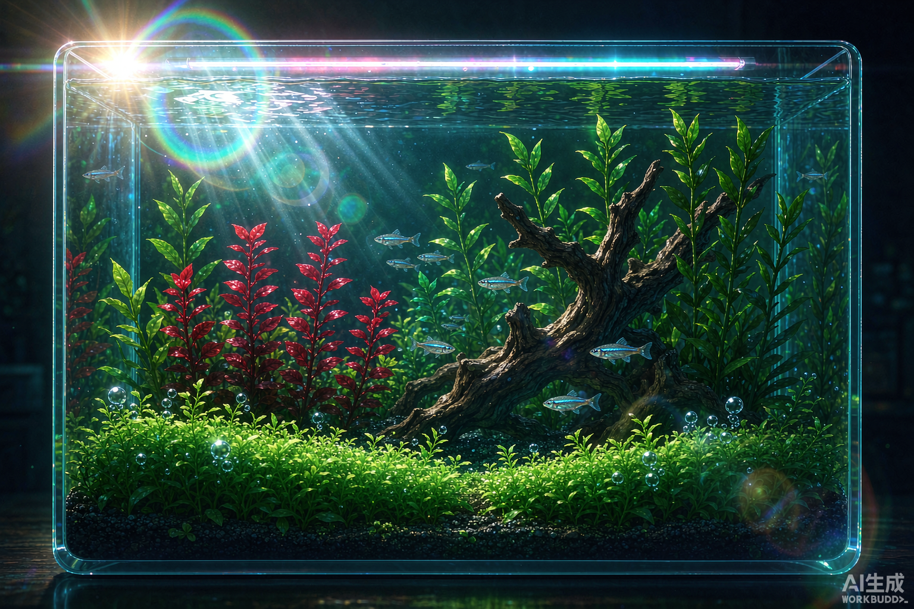
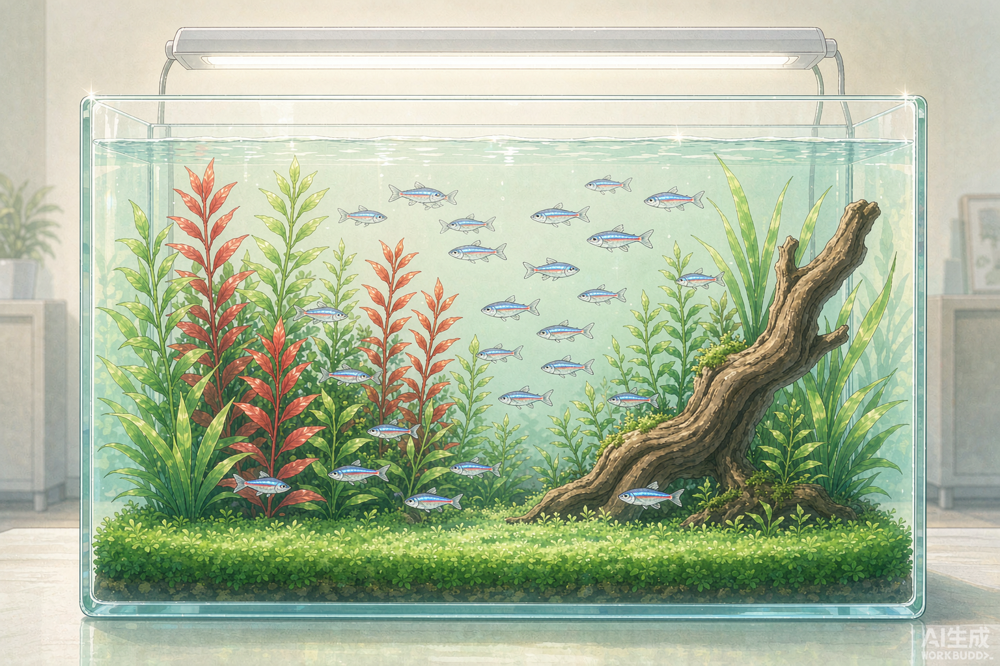
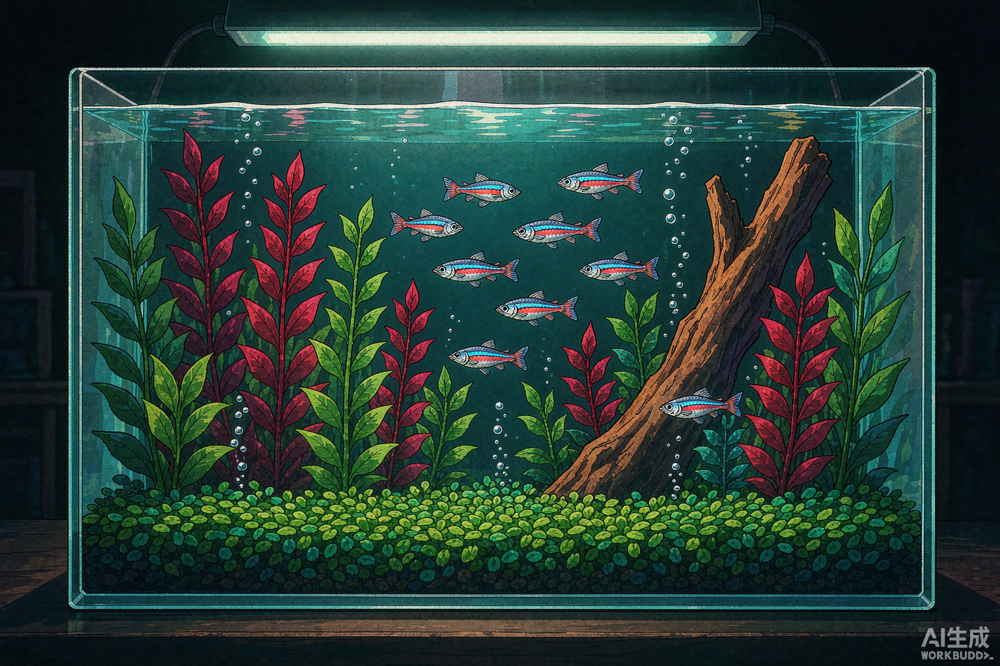
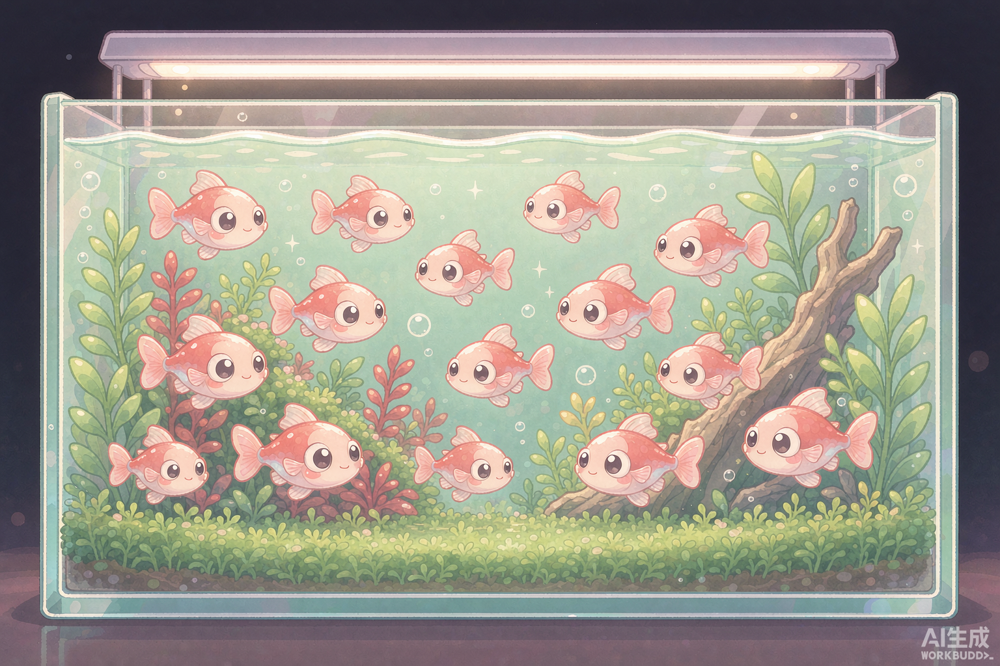
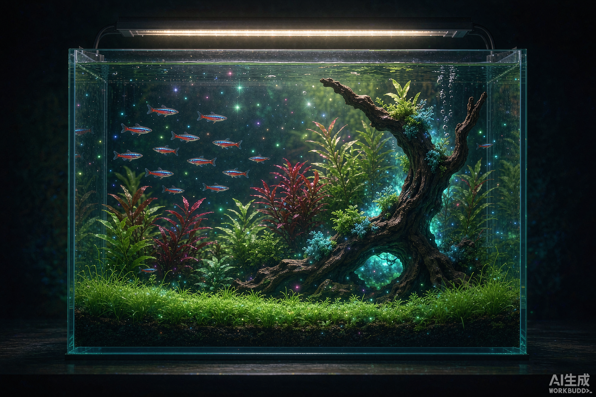
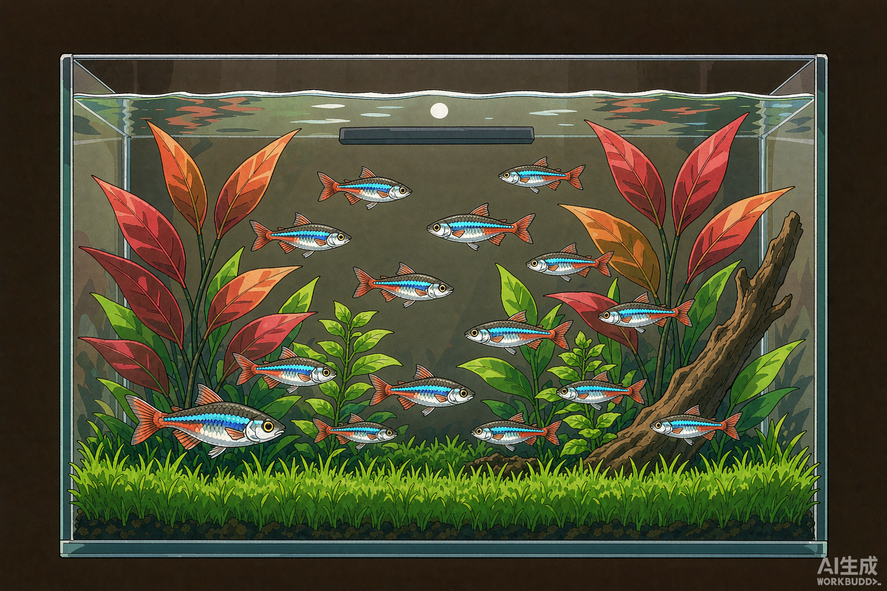

01环境层首选
02宣传物料首选
03图鉴/教学首选
04彩蛋首选
05角色层首选
06夜间模式首选补一张：赛璐璐本体长什么样
上面第 ④ 张其实是“90 年代复古赛璐璐”——在赛璐璐底子上又叠了褪色、颗粒和扫描线，所以看起来旧。真正的赛璐璐本体更干净、更硬： 它不追求真实，追求一眼可读。左边这张才是原味。

- 线条等宽黑棕描边，闭合、不抖
- 阴影每材质只两级：底色 + 一级硬边暗部
- 颜色平涂纯色，不渐变、不喷枪
- 高光只留明确色块，不做体积光
- 质感干净；颗粒与褪色是复古变体另加的
一句话记住：赛璐璐是“分色”，不是“混色”。现实中一个物体有无数层灰，赛璐璐只给你两块——亮的一块、暗的一块，边界是刀切的。 也正因为它把画面压成有限色块，所以在大屏幕上极其清晰、制作也快，这正是当年 TV 动画不得不选它的原因。
如果只能选，怎么配
Toon Version
① 吉卜力水彩 × ⑤ Q 版
环境交给水彩（柔和、有呼吸感），角色交给 Q 版（可爱、可互动）。一个负责"想待着"，一个负责"想戳"。
Real Version
② 新海诚光影
只用在对外物料：宣传片、商店页、延时摄影片头。游戏内长时间看会疲劳，别做常驻。
Special
④ 赛璐璐 + ⑥ 温柔奇幻
前者做成就/回忆彩蛋，后者做夜间与传说事件。都属于"低频高感知"，用多了就贬值。
一句话结论：①和⑤是主风格，②是门面，③是说明书，④和⑥是彩蛋。 真正要落到代码里的，其实只有两套参数——水彩笔触的柔边 + Q 版的粗描边； 其余四条线都可以用同一套渲染管线换色板和后期强度做出来。